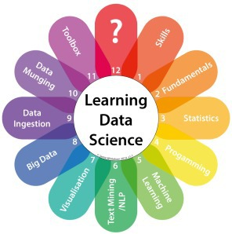

Grid Search & Randomized Search
Optimizing hyper-parameters for machine learning

NYCDSSG demo by: Eric Xu
August 3, 2015 @Spotify

Agenda
- What are hyper-parameters?
- Grid search
- Random search
- Other tuning methodologies
- iPython notebook demo
Motivation
- How can we make machine learning more accessible?
What are hyper-parameters?
sklearn.neighbors.KNeighborsClassifier( n_neighbors=5, weights='uniform', algorithm='auto', leaf_size=30, p=2, metric='minkowski', metric_params=None, **kwargs)
- High level settings pertaining to a machine learning model that govern how a model performs
- Must be specified before the training procedure
Difference in Model Parameters
| Model | Number of Parameters |
|---|---|
| Multinomial Naive Bayes | 3 |
| Linear Regression | 4 |
| Linear Discriminant Analysis | 6 |
| K-Nearest Neighbors | 7 |
| Decision Tree | 10 |
| Logistic Regression | 12 |
| Support Vector Machine | 13 |
| Random Forest | 15 |
| Neural Network | 30+ |
Which Parameters to Tune?
- 4 parameters with 6 possible values each means \(6^4\) = 1,296 combinations
- What's the correct range and distribution for numerical parameters?
- Finding the right parameter values could be the difference between random guessing and state-of-the-art performance.
How to Tune Model Parameters?
- Expert intuition
- Grid search
- Random search
- Intern search
Grid Search
The traditional way of performing hyperparameter optimization has been grid search, which is simply an exhaustive searching through a manually specified subset of the hyperparameter space of a learning algorithm.
Grid Search Pros and Cons
Pros:
Cons:
- Simple to understand
- Easy to implement
- Embarrassingly parallel
- Unlikely to miss anything too obvious
Cons:
- Fixed step size
- Suffers from the curse of dimensionality
- If irrelevant parameters or range values, the number of wasted trials is exponential in the number of search dimensions that turn out to be irrelevant.
Random Search

- Instead of searching over the entire grid, random search only evaluates a random sample of points on the grid.
- Instead of defining a finite set of parameter values to try, we specify the distribution range and the number of trials to run.
Random Search
Not taken seriously because it can't possibly compete against an exhaustive grid search. Or can it?
Bergstra and Bengio
- James Bergstra and Yoshua Bengio, from the University of Montreal, publishes "Random Search for Hyper-Parameter Optimization" in 2012.
- In surprisingly many instances, random search performs about as well as grid search in a fraction of the trials.
- Even with a million unique parameter combinations, trying only 60 random points from the grid will achieve near optimal results. WAT!?!
Low Effective Dimensionality
$$f(x,y) = g(x) + h(y) \approx g(x)$$
- If a function of two variables \(f(x,y)\) could be approximated by another function of one variable \(g(x)\), we could say that \(f\) has a low effective dimension.
- In plain english: Some parameters will affect a model's performance more than others.
Low Effective Dimensionality
- \(f(x,y) = g(x) + h(y) \approx g(x)\)
- With grid search, 9 trials only test \(g(x)\) in 3 distinct places.
- With random search, all 9 trials explore distinct values of \(g\).
Why 60 Trials?
- Given a distribution over a sample space with a finite maximum
- Each random draw has a 5% chance of falling within the top 5% of the true maximum.
- If we draw \(n\) points independently, the probability that all will miss the desired interval is \((1-0.05)^n\)
- The probability that at least one of them succeeds in hitting the desired interval is 1 minus the above.
- So the number of draws necessary to achieve a 95% probability of success is \(1-(1-0.05)^n>0.95\)
- When solved, we get \(n >= 60\)
- The moral of the story is: if the close-to-optimal region of hyperparameters occupies at least 5% of the grid surface, then random search with 60 trials will find that region with high probability.
Random Search Pros and Cons
Pros:
Cons:
- Easy to implement
- Embarrassingly parallel
- Obtains equal or better results than grid search using fewer trials in high-dimensional search spaces
Cons:
- No guarantee the space will be explored adequately in low-dimensional searches
- Might waste computation evaluating points that are very close together

Resources
- Scikit-learn documentation: GridSearchCV, RandomizedSearchCV
- Timed example: Comparing randomized search and grid search
- Paper by James Bergstra and Yoshua Bengio: Random Search for Hyper-Parameter Optimization